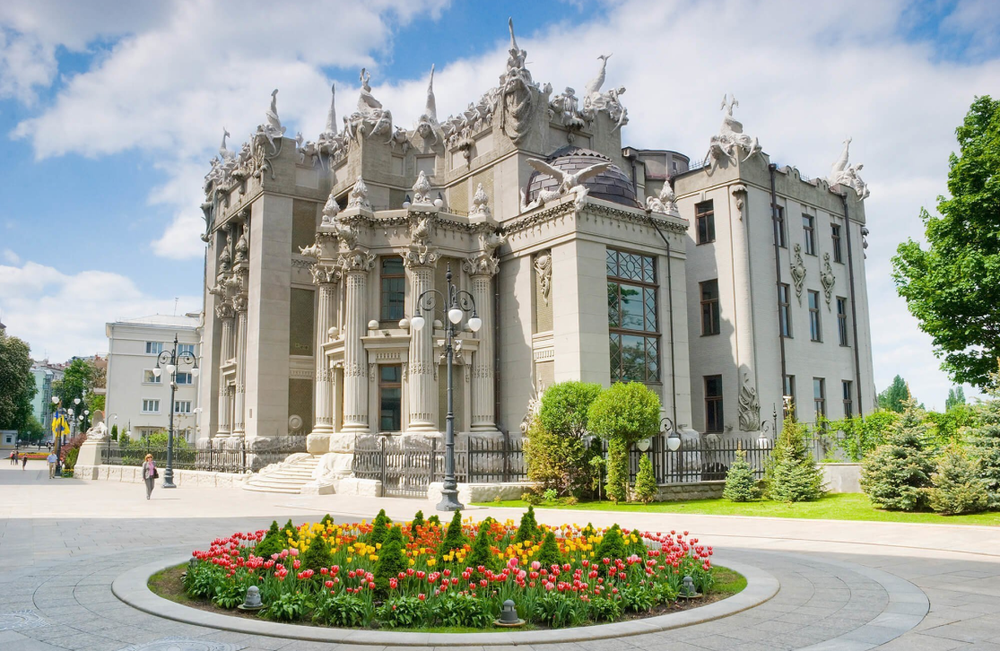
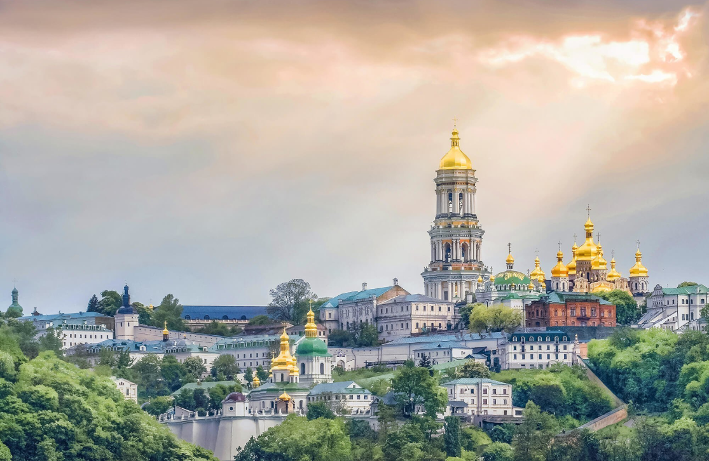
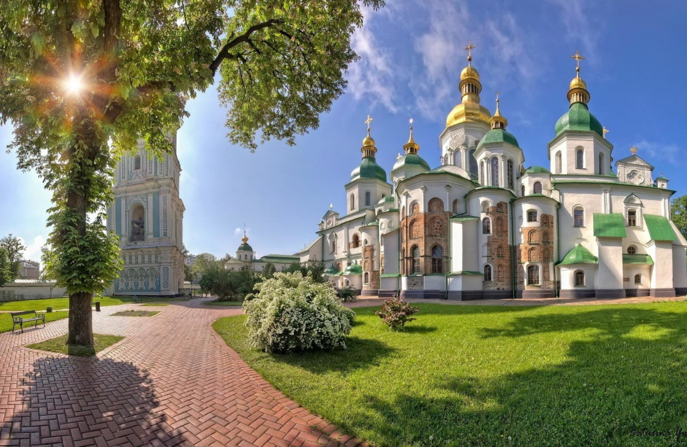

Київ

Будинок з химерами
Чудернацький "Будинок з химерами" побудував в 1901-1903 рр. видатний київський зодчий Владислав Городецький.
Розташована на краю яру будівля має 3 поверхи з боку вулиці і 6 поверхів з боку схилу. Химерні скульптурні цементні прикраси фасаду (зображення слонів, носорогів, антилоп, ящірок, жаб, міфічних дів верхи на рибах і т.д.) виконані італійським скульптором з Мілана – Еліо Сала. Тематика прикрас пов'язана із захопленням Владислава Городецького полюванням.

Національний Києво-Печерський історико-культурний заповідник
У православному світі всього 5 Лавр. З них найдавніша – Києво-Печерська Лавра, яка є всесвітньо відомим місцем паломництва православних християн.
Спочатку тут був Православний монастир, заснований у 1051 р. вихідцем з Любеча на Чернігівщині – подвижником Антонієм. Ченці спочатку жили і молилися в печерах, а потім вже були побудовані келії і велика церква.
В XI ст. монастир став центром поширення і утвердження християнства в Київській Русі, були засновані іконописна майстерня та перша лікарня. Cтатус «лаври» отримав в XII ст., зміцнюючись як центр літописання і житійної літератури: тут працювали відомі літописці (автор «Повісті временних літ» Нестор, Никон, Сильвестр). У 1698-1701 рр. були споруджені нові фортечні стіни з бійницями і баштами паралельно зруйнованим у 1240 р ордами Батия.
У XVII-XVIII ст. побудовані Всіхсвятська церква над Економічними воротами, ансамблі Ближніх і Дальніх печер, келії соборних старців, будинок друкарні та ін. В 1731-44 рр. споруджена Велика дзвіниця (висота – 96,52 м). Архітектурний ансамбль лаври склався до кінця XIX в.

Національний заповідник «Софія Київська»
Національна святиня, всесвітньо відомий пам'ятник історії, архітектури і монументального живопису періоду розквіту Київської Русі. Результати найновіших досліджень вчених заповідника показують, що Софія була заснована 1011 р
Споруджений за часи князювання Володимира Великого та його сина Ярослава Мудрого, Софійський собор мав непересічне значення духовного, політичного та культурного центру. Тут знаходилася митрополія, відбувалися церемонії посадження на великокняжий престол і посвячення в митрополити; приймали іноземних послів і укладали найважливіші угоди; функціонували унікальна бібліотека та скрипторій, де велося літописання, працювали перекладачі і переписувачі книг "від грек на слов'янське письмо".